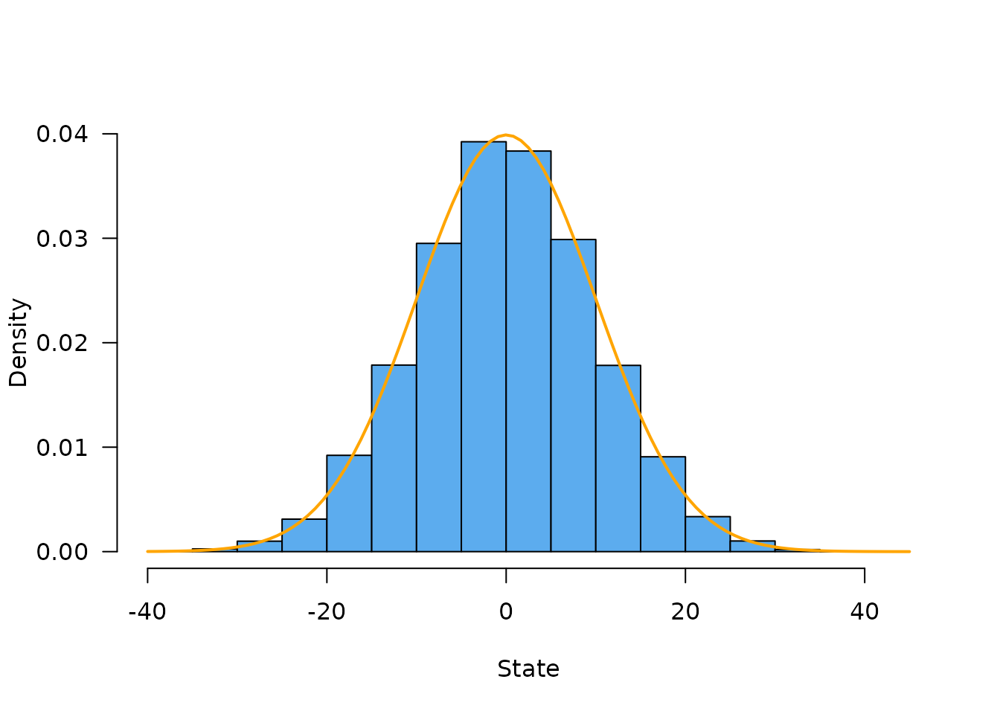
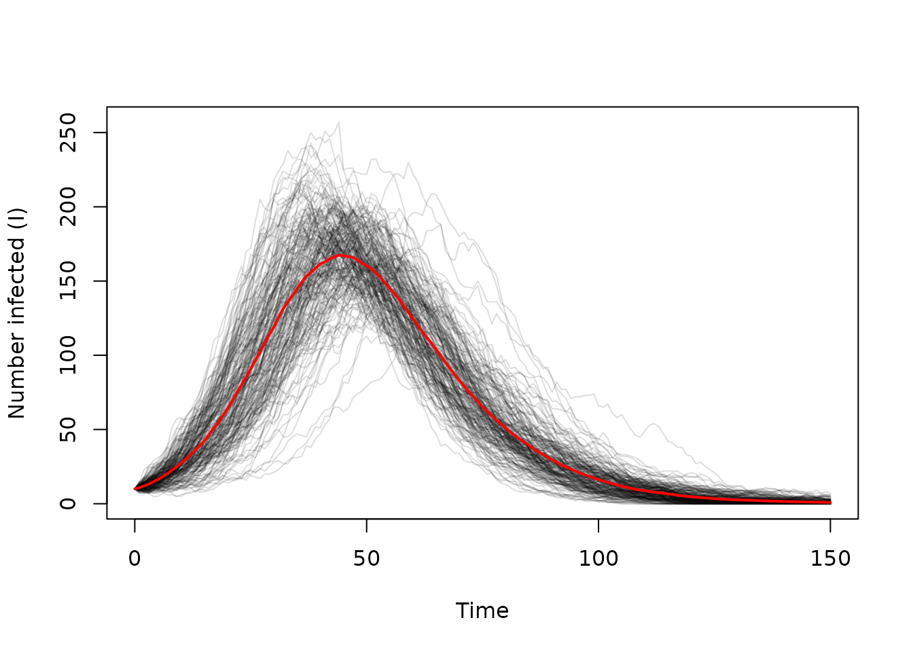

Stochastic models can be used in statistical inference via methods such as particle filtering but in practice doing so requires that the models can be run over and over again very quickly. While R has excellent support for sampling from distributions, it is not necessarily well suited for this sort of problem because R is single threaded, so we are forced to evaluate realisations of the stochastic process in series (one after another) rather than in parallel.
The dust2 package provides tools to help write
stochastic models that can be evaluated in parallel. It does not
directly provide statistical methods; see the monty package for that.
Instead, it focuses on providing:
- a way of wrapping a user-provided model, itself written as a C++ class
- a lightweight interface that drives this model from R
- a set of useful primitives for developing sequential Monte Carlo methods.
A simple example - random walk
Consider a unbiased random walk; at each time step we move our
position with a draw from a normal distribution with mean 0 and some
standard deviation. We consider a single individual moving but will
eventually simulate a family of these individuals, each independent. All
simulations have a sense of time - a unitless measure of time “step”
will be used but it’s up to you how it is interpreted (time is a
non-negative integer, implemented using size_t).
In this example, we’ll use the built-in example from the package:
However, this is also bundled into the package and can be loaded with:
walk <- dust_example("walk")walk is a dust_system_generator object:
walk
#>
#> ── <dust_system_generator: walk> ───────────────────────────────────────────────
#> ℹ This system runs in discrete time with a default dt of 1
#> ℹ This system has 3 parameters
#> → 'sd', 'len', and 'random_initial'
#> ℹ Use dust2::dust_system_create() (`?dust2::dust_system_create()`) to create a system with this generator
#> ℹ Use coef() (`?stats::coef()`) to get more information on parametersCreate an instance of the system using
dust_system_create().
sys <- dust_system_create(walk, list(sd = 1), n_particles = 20)
sys
#>
#> ── <dust_system: walk> ─────────────────────────────────────────────────────────
#> ℹ 1 state x 20 particles
#> ℹ This system runs in discrete time with dt = 1
#> ℹ This system has 1 parameter that can be updated via `dust_system_update_pars`
#> → 'sd'
#> ℹ Use coef() (`?stats::coef()`) to get more information on parametersThis returns a dust_system object that can be used to
simulate from or interact with the system. For example, our initial
model state is
dust_system_state(sys)
#> [,1] [,2] [,3] [,4] [,5] [,6] [,7] [,8] [,9] [,10] [,11] [,12] [,13] [,14]
#> [1,] 0 0 0 0 0 0 0 0 0 0 0 0 0 0
#> [,15] [,16] [,17] [,18] [,19] [,20]
#> [1,] 0 0 0 0 0 0Here there is one row per model state variable (there is only one
here) and one column per particle (there are 20). All systems start with
a zero state unless you set them via
dust_system_set_state(),
dust_system_set_state_initial() or by running the
system.
We can run the system for 100 time steps, then return the state at the end of the walk (and not at any intermediate times):
dust_system_run_to_time(sys, 100)
dust_system_state(sys)
#> [,1] [,2] [,3] [,4] [,5] [,6] [,7]
#> [1,] -2.069917 -0.9781523 8.965475 5.710992 17.03536 -4.266331 6.208208
#> [,8] [,9] [,10] [,11] [,12] [,13] [,14]
#> [1,] 1.202825 -20.75184 -6.728591 0.2456902 7.762512 -7.534014 -4.132089
#> [,15] [,16] [,17] [,18] [,19] [,20]
#> [1,] -5.865048 -16.15312 23.93168 -18.12983 3.208677 -1.279874At this point our particles have been run for 100 time steps with standard deviation 1 at each step so they will be distributed following Normal(0, 10). This is easier to see if we simulate a lot of particles, here 20,000:
sys <- dust_system_create(walk, list(sd = 1), n_particles = 20000)
dust_system_run_to_time(sys, 100)
hist(dust_system_state(sys), freq = FALSE, las = 1, col = "steelblue2", main = "",
ylim = c(0., 0.04), xlab = "State")
curve(dnorm(x, 0, 10), col = "orange", add = TRUE, lwd = 2)
Running a model in parallel
The approach above still runs everything in serial, one particle
after another. We can configure this system to run in parallel by
providing the extra argument n_threads to the
constructor.
Provided that your computer can compile with OpenMP the following code will execute in parallel using 2 threads
sys <- dust_system_create(walk, list(sd = 1), n_particles = 20, n_threads = 2)
dust_system_run_to_time(sys, 100)
dust_system_state(sys)
#> [,1] [,2] [,3] [,4] [,5] [,6] [,7]
#> [1,] -7.798794 -4.706807 -6.580274 12.30675 10.50923 9.982649 -9.252921
#> [,8] [,9] [,10] [,11] [,12] [,13] [,14] [,15]
#> [1,] 3.452613 4.99186 6.299646 -5.948605 8.729621 -7.338344 8.081076 0.1275727
#> [,16] [,17] [,18] [,19] [,20]
#> [1,] 8.244453 6.885286 -9.878333 -11.25054 -3.151811We use as many random number generators as there are particles, so if
you run fewer particles or more, increase the threads or decrease, the
results will be the same (see vignette("design") for more
on this).
You should be careful when selecting the number of threads.
dust will never use more than one thread at a time without
it being requested, but avoid using parallel::detectCores()
to work out how many threads you have available as it will often return
an overestimate. This is particularly the case in a shared-use system
such as a cluster or CRAN’s servers.
A more interesting example
Consider now an SIR model (Susceptible - Infected - Recovered). This sort of model is common in epidemiology, and is often extended to add additional compartments (e.g., SEIR which adds an Exposed compartment) or by structuring each compartment based on properties such as age. Here, we show a simple example with just 3 compartments, plus two tracking cumulative infections and daily infections.
sir <- dust_example("sir")The model is initialised the same way as before:
sys <- dust_system_create(sir, list(), n_particles = 2)This system has a non-trivial initial state; we can set it with
dust_system_set_state_initial():
dust_system_state(sys)
#> [,1] [,2]
#> [1,] 0 0
#> [2,] 0 0
#> [3,] 0 0
#> [4,] 0 0
#> [5,] 0 0
dust_system_set_state_initial(sys)
dust_system_state(sys)
#> [,1] [,2]
#> [1,] 990 990
#> [2,] 10 10
#> [3,] 0 0
#> [4,] 0 0
#> [5,] 0 0Because we have 5 states per particle, this is a 5 x 2 matrix.
In order to run the simulation beginning-to-end, we use the
$simulate method on a dust object, which runs over a set of
time steps and records the state at each. Let’s do this with 200
particles:x
sys <- dust_system_create(sir, list(), n_particles = 200)
dust_system_set_state_initial(sys)
times <- seq(0, 150)
state <- dust_system_simulate(sys, times)The output here is a 5 x 200 x 151 matrix (n state x n particles x n times)
dim(state)
#> [1] 5 200 151We can use dust_unpack_state to convert this into a
list-of-matrices:
state <- dust_unpack_state(sys, state)
names(state)
#> [1] "S" "I" "R" "cases_cumul" "cases_inc"
dim(state$cases_inc)
#> [1] 200 151so here state$cases_inc is a 200 (particle) by 151 (time
step) matrix. Note that this will need transposing before plotting.
Plotting this over time, we see:
matplot(times, t(state$I), type = "l", lty = 1, col = "#00000022",
xlab = "Time", ylab = "Number infected (I)")
lines(times, colMeans(state$I), col = "red", lwd = 2)
Other methods
There are a few other methods on the dust objects that may be useful.
Reordering particles
This method exists to support particle filtering, and allows resampling or reordering of particles.
sys <- dust_system_create(walk, list(sd = 1), n_particles = 20)
dust_system_run_to_time(sys, 1)
dust_system_state(sys)
#> [,1] [,2] [,3] [,4] [,5] [,6] [,7]
#> [1,] 0.4197933 0.250539 0.01482815 1.448195 0.5231619 0.820422 0.2495565
#> [,8] [,9] [,10] [,11] [,12] [,13] [,14]
#> [1,] -0.3809611 0.3352818 1.9442 0.229384 -1.492759 -0.1146346 -0.3091399
#> [,15] [,16] [,17] [,18] [,19] [,20]
#> [1,] 0.4338285 -0.1675469 0.7650757 -1.294391 -0.6569056 -0.5690646Suppose that we wanted to reorder these particles so that they were in decreasing order:
index <- order(dust_system_state(sys))
index
#> [1] 12 18 19 20 8 14 16 13 3 11 7 2 9 1 15 5 17 6 4 10We then pass this index to the reorder method:
dust_system_reorder(sys, index)
dust_system_state(sys)
#> [,1] [,2] [,3] [,4] [,5] [,6] [,7]
#> [1,] -1.492759 -1.294391 -0.6569056 -0.5690646 -0.3809611 -0.3091399 -0.1675469
#> [,8] [,9] [,10] [,11] [,12] [,13] [,14]
#> [1,] -0.1146346 0.01482815 0.229384 0.2495565 0.250539 0.3352818 0.4197933
#> [,15] [,16] [,17] [,18] [,19] [,20]
#> [1,] 0.4338285 0.5231619 0.7650757 0.820422 1.448195 1.9442We can then continue our random walk. There is no need to sample every particle and particles can appear multiple times in the sample, but the total number must be conserved. Suppose that we want to sample particles based on how close they are to 0:
p <- dnorm(dust_system_state(sys))
index <- sample(length(p), replace = TRUE , prob = p)
index
#> [1] 2 15 15 9 10 7 16 6 4 5 16 20 6 3 2 10 15 8 11 6We can then apply this sampling:
dust_system_reorder(sys, index)
dust_system_state(sys)
#> [,1] [,2] [,3] [,4] [,5] [,6] [,7]
#> [1,] -1.294391 0.4338285 0.4338285 0.01482815 0.229384 -0.1675469 0.5231619
#> [,8] [,9] [,10] [,11] [,12] [,13] [,14]
#> [1,] -0.3091399 -0.5690646 -0.3809611 0.5231619 1.9442 -0.3091399 -0.6569056
#> [,15] [,16] [,17] [,18] [,19] [,20]
#> [1,] -1.294391 0.229384 0.4338285 -0.1146346 0.2495565 -0.3091399This is not terribly useful on its own but is a key part of a particle filter.
When this reordering happens, only the model state is copied around;
the internal data and random number state are left
behind.
Set particle state
A particle state is determined by three mutable things;
pars, state and time; these can
all be updated for a model after it has been created. We have found
setting one or more of these at a time important;
- Resetting the model with a new set of parameters
(
pars), initial conditions (state) and times (time) - Changing
parsat some point in the simulation to introduce some new aspect of the model - Changing
stateto manually move around some individuals within a model - Setting
timealong withstatewhen initialising the model from a previously saved state
The update_state method allows setting any or all of
these components.
By default every particle starts from the initial condition specified
by your model classes initial() method. However, you can
specify a state directly using the $update_state() method.
Here, we initialise our SIR model with only 1 infected individual rather
than 10:
sys <- dust_system_create(sir, list(), n_particles = 20)
dust_system_set_state(sys, matrix(c(1000, 1, 0, 0, 0), 5, 1))
dust_system_state(sys)
#> [,1] [,2] [,3] [,4] [,5] [,6] [,7] [,8] [,9] [,10] [,11] [,12] [,13] [,14]
#> [1,] 1000 1000 1000 1000 1000 1000 1000 1000 1000 1000 1000 1000 1000 1000
#> [2,] 1 1 1 1 1 1 1 1 1 1 1 1 1 1
#> [3,] 0 0 0 0 0 0 0 0 0 0 0 0 0 0
#> [4,] 0 0 0 0 0 0 0 0 0 0 0 0 0 0
#> [5,] 0 0 0 0 0 0 0 0 0 0 0 0 0 0
#> [,15] [,16] [,17] [,18] [,19] [,20]
#> [1,] 1000 1000 1000 1000 1000 1000
#> [2,] 1 1 1 1 1 1
#> [3,] 0 0 0 0 0 0
#> [4,] 0 0 0 0 0 0
#> [5,] 0 0 0 0 0 0Now, when we run the model, far more of the epidemics fail to take off as the infected individual disappears before infecting anyone.
state <- dust_system_simulate(sys, times)
state <- dust_unpack_state(sys, state)
matplot(times, t(state$I), type = "l", lty = 1, col = "#00000022",
xlab = "Day", ylab = "Number infected (I)")
You can optionally set the initial time along with the state. This is useful if your model depends on time (e.g., you use the time step in a calculation by transforming it into some more meaningful measure of time).
You can also set the initial state to a range of different values. Suppose we set the initial number of infections to be Poisson distributed with a mean of 10, we might write:
I0 <- rpois(20, 10)
state0 <- rbind(1010 - I0, I0, 0, 0, 0, deparse.level = 0)
dust_system_set_state(sys, state0)
dust_system_set_time(sys, 0)
dust_system_time(sys)
#> [1] 0
dust_system_state(sys)
#> [,1] [,2] [,3] [,4] [,5] [,6] [,7] [,8] [,9] [,10] [,11] [,12] [,13] [,14]
#> [1,] 1001 1002 1000 1003 998 999 998 998 1000 1007 999 997 1003 1002
#> [2,] 9 8 10 7 12 11 12 12 10 3 11 13 7 8
#> [3,] 0 0 0 0 0 0 0 0 0 0 0 0 0 0
#> [4,] 0 0 0 0 0 0 0 0 0 0 0 0 0 0
#> [5,] 0 0 0 0 0 0 0 0 0 0 0 0 0 0
#> [,15] [,16] [,17] [,18] [,19] [,20]
#> [1,] 999 996 1001 999 1001 1005
#> [2,] 11 14 9 11 9 5
#> [3,] 0 0 0 0 0 0
#> [4,] 0 0 0 0 0 0
#> [5,] 0 0 0 0 0 0